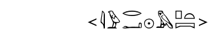
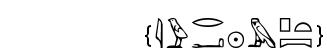
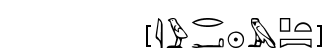
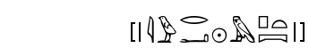
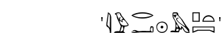
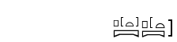

Philological codes
Philological codes
Added
 -[&-i-w-r:a-ra-m-p*t:pt-&]
-[&-i-w-r:a-ra-m-p*t:pt-&]

Superfluous
 -[{-i-w-r:a-ra-m-p*t:pt-}]
-[{-i-w-r:a-ra-m-p*t:pt-}]

Erased
 -[[-i-w-r:a-ra-m-p*t:pt-]]
-[[-i-w-r:a-ra-m-p*t:pt-]]

Previously readable
 -["-i-w-r:a-ra-m-p*t:pt-"]
-["-i-w-r:a-ra-m-p*t:pt-"]

Added by scribe
 -['-i-w-r:a-ra-m-p*t:pt-']
-['-i-w-r:a-ra-m-p*t:pt-']

The original manuel suggested that philological indications worked as parenthesis,
but this doesn't correspond to actual typographical practices.
Hence, winglyph(tm) considers these are simple signs.
which means that you don't need to match them.
JSesh supports both this interpretation and the original one (which was supported in tksesh).
Currently, it loads any file with a ".gly" extension using the winglyph rule,
and any file with a ".hie" extension using tksesh's rule
In cadrat :
 p*[[*t*]]:pt_-p*[[*t:pt-]]
p*[[*t*]]:pt_-p*[[*t:pt-]]

Support for deprecated Manuel practices
JSesh is able to read texts that don't follow the exact manuel de codage.
For instance, it's quite forgiving about spaces.
However, when saving a text, JSesh will write it in a very normalized form, to ensure a maximal readability.